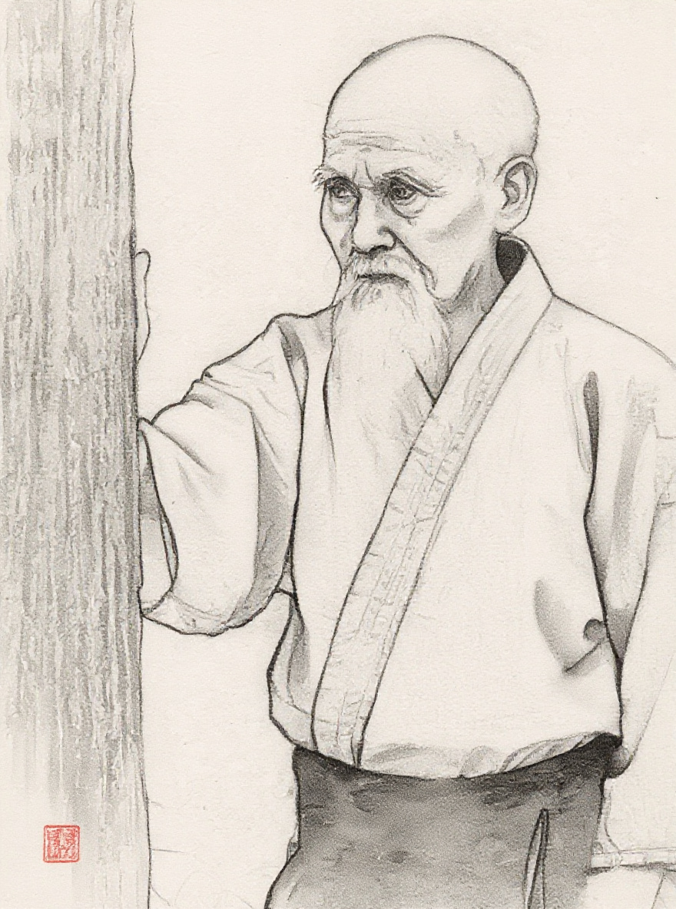

L'aïkido ne combat pas. Il esquive, et laisse aller. C'est ça, l'aiki : donner sa liberté à l'autre.
Découvrir l'esprit de l'aïkidoL'aïkido est une voie de construction de soi (Do), non une technique de combat ni un sport de compétition. Il faut assimiler, expérimenter, développer la vigilance et faire évoluer. Pas d'opposition, apprendre dans le Dojo et que cela serve dans nos rapports aux autres pour une vie meilleure. La voie est sans limite.
« L'aïkido est une voie qui permet de se découvrir soi-même et de se construire en tant qu'être humain, afin de vivre une vie pleine et heureuse. » — Tamura Nobuyoshi
Plus qu'un art martial, l'Aïkido est un véritable art de vivre. Une remise en question profonde de soi.

Morihei Ueshiba, « O-Sensei », le grand maître. Guerrier devenu sage. Il a transformé la violence des arts martiaux en une voie d'harmonie : ne pas vaincre l'autre, mais se construire soi. Nous suivons la voie tracée par le Fondateur de l'Aïkido, O Sensei Ueshiba, la voie montrée par Tamura Sensei et les Maîtres historiques. Nos pas empruntent ce chemin sur les tatamis du Dojo de Dinan.
Découvrir son histoireNotre enseignement est clair, lent et sûr. « Ce qui m'intéresse n'est pas simplement d'envoyer des uke en l'air », disait Saito. La réussite d'un cours ne se mesure pas au spectaculaire des chutes, mais à la compréhension et à la sécurité des élèves.
Uke, pour l'aïkido, c'est Aite : la main qui conduit.
Le plaisir n'est pas contraire à la rigueur, il en est la preuve.
📍 Salle du Némée, 37 Rte de Dinard, 22100 Dinan
Licence FFA comprise
190 € : jeunes, étudiants, personnes sans emploi
Accessible à tous, sans prérequis sportifs ou souplesse.
📞 06 85 21 04 69
📞 06 04 08 94 63
Salle du Némée
37 Rte de Dinard
22100 Dinan